La Gilda Cobra risiede a Levania, luogo forestale, dove ogni intruso si perde in un labirinto di trappole.The Cobra Guild dwells in Levania, a forest place where every intruder is lost in a labyrinth of traps.[Torna alla Home][Back to Home]
Scheda Cobra (Cobra)Cobra (Cobra) Profile
Utilizzo GildaGuild Usage
Per giocare una partita su Halo Infinite devi scegliere un Mode e una Mappa.
In questo evento i Modes di una partita hanno una categoria (Standard,Social,Sketch,Cahmpions) con un tipo (TS,MTS,FFA) e la partita viene modificata con opzioni (Sayans,Arsenale Gilda).
Qui trovi tutti i Modes, Mappe e Opzioni quando questa Gilda ha il potere decisionale.
👉Quando questa Gilda ha il potere decisionale di una Armata, attinge a tutti i Modes, Mappe e Opzioni di tutte le Gilde che compongono l'Armata.
👉Tutto quello elencato ha nomi ufficiali su Halo Infinite quindi puoi usare "Ricerca" per parola sul gioco.
👉Ricordati di leggere il RegolamentoRulesTo play a match on Halo Infinite you must pick a Mode and a Map.
In this event a match's Modes have a category (Standard, Social, Sketch, Champions) with a type (TS, MTS, FFA) and the match is modified with options (Sayans, Guild Arsenal).
Here you'll find all the Modes, Maps and Options for when this Guild holds the decision-making power.
👉When this Guild holds the decision-making power of an Army, it draws on all the Modes, Maps and Options of every Guild making up the Army.
👉Everything listed uses official Halo Infinite names, so you can use in-game "Search" by keyword.
👉Remember to read the Rules
Modes: Standard, e ChampionsModes: Standard, and Champions
Questi sono i Modes che generano partite Standard, e la Categoria Champions.
Usa uno di questi obbiettivi per vincere la partita.These are the Modes that produce Standard matches, and the Champions Category.
Use one of these objectives to win the match.
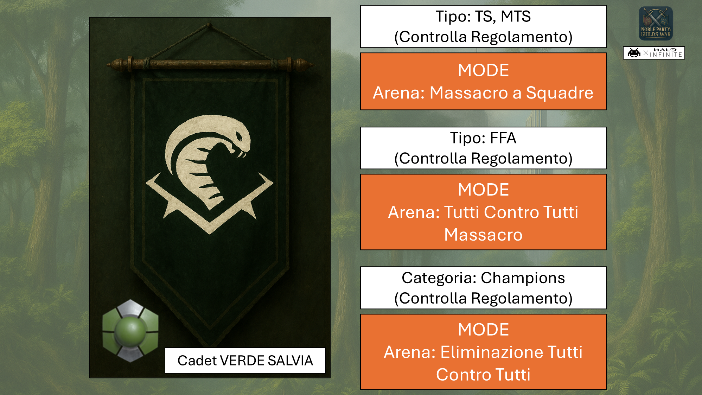
👉Personalizza gratuitamente il colore della armatura del tuo personaggio con il colore della Gilda.
👉Per Champions, puoi pure usare Fortnite (Battle Royale) in Backlog (in questo caso senza applicare L'Arsenale della Gilda).👉Freely customize your character's armor color with the Guild's color.
👉For Champions, you can also use Fortnite (Battle Royale) in the Backlog (in this case without applying the Guild Arsenal).
Modes: WARCRAFT (Social)
Social sono i Modes con obbiettivi precisi. Hanno sempre bisogno di una Mappa dove utilizzarli.Social are the Modes with specific objectives. They always need a Map to be played on.
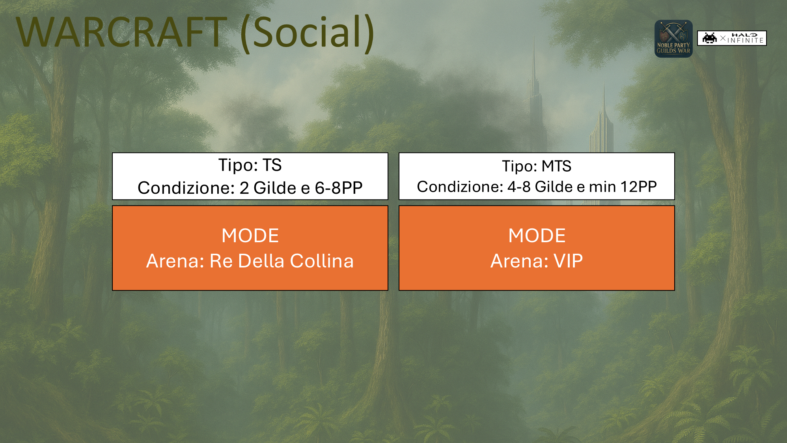
MappeMaps
Una volta scelto il Modes, o Champions non Fortnite, scegli la Mappa dove giocare.
Fai attenzione al numero di Gilde in gioco e al numero di Giocatori PP totali.Once the Mode is chosen, or Champions that isn't Fortnite, pick the Map to play on.
Watch the number of Guilds in play and the total number of PP Players.
No. #1
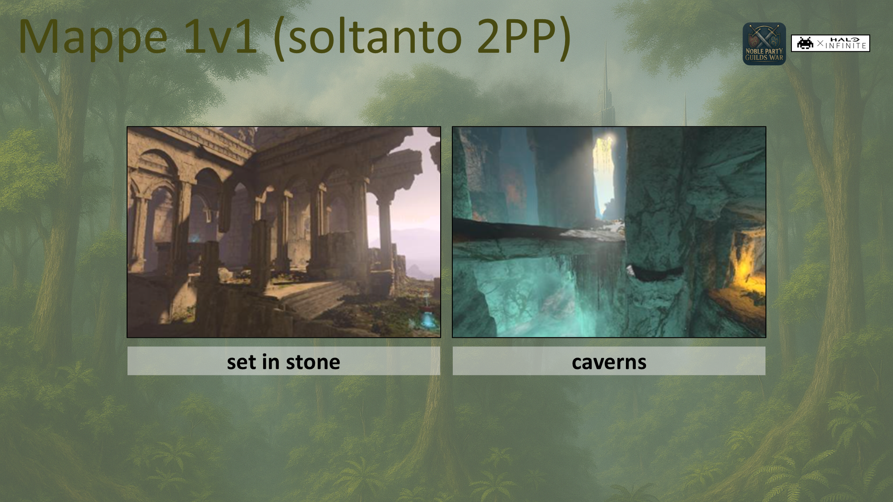
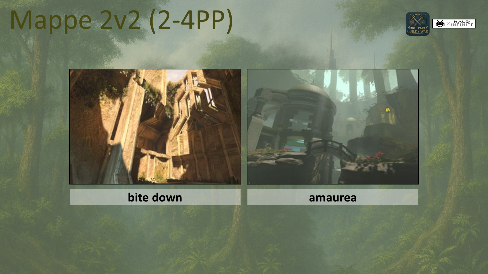
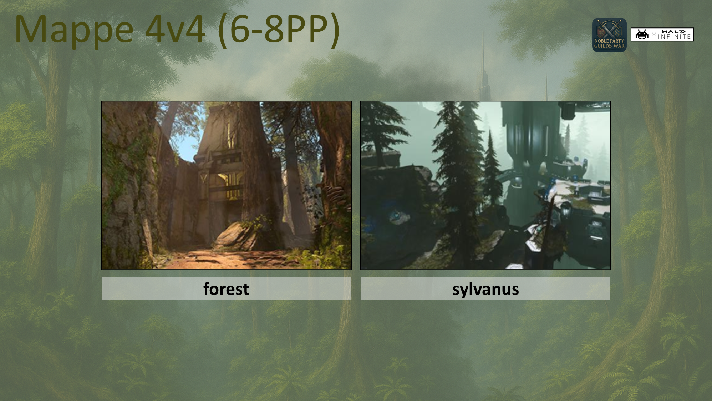
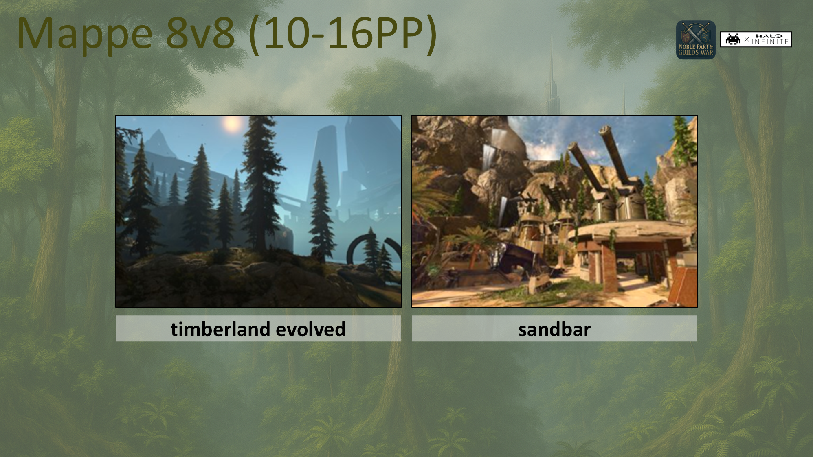
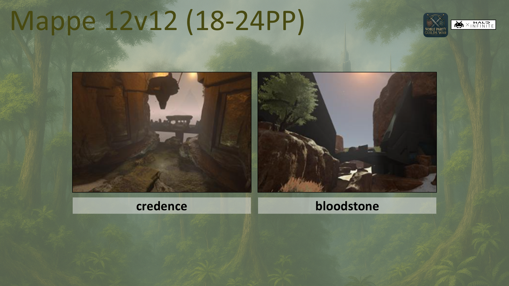
👉Quando ci sono soltanto 2 Gilde: TS=MTS e potrai accedere a Mappe piccole.
👉Quando fai parte di una Armata: TS sono scontri fra le Armate, oppure
decomporre l'Armata in Gilde per MTS ed hai comunque accesso a Mappe grandi.
👉Puoi scegliere la Mappa 12v12 con la parola "Heavies" alla fine includendo veicoli pesanti.
👉Ricordati di leggere il 👉When there are only 2 Guilds: TS=MTS and you can access small Maps. 👉When you are part of an Army: TS means clashes between the Armies, or break the Army down into Guilds for MTS and you still have access to large Maps. 👉You can pick the 12v12 Map with the word "Heavies" at the end, which includes heavy vehicles. 👉Remember to read theRegolamentoRules
Sketch sono combo di Mappa e Modes. Scegli una Sketch dalla Backlog.Sketches are Map and Mode combos. Pick a Sketch from the Backlog.
Opzione: Arsenale della Gilda (AG)Option: Guild Arsenal (AG)
Decidi se iniziare la partita impostando queste Armi ed Equipaggiamento per tutti
i giocatori: quindi a questa Gilda e a tutte le altre Gilde in gioco.Decide whether to start the match with these Weapons and Equipment set for all
players: so for this Guild and for every other Guild in play.
No. #1
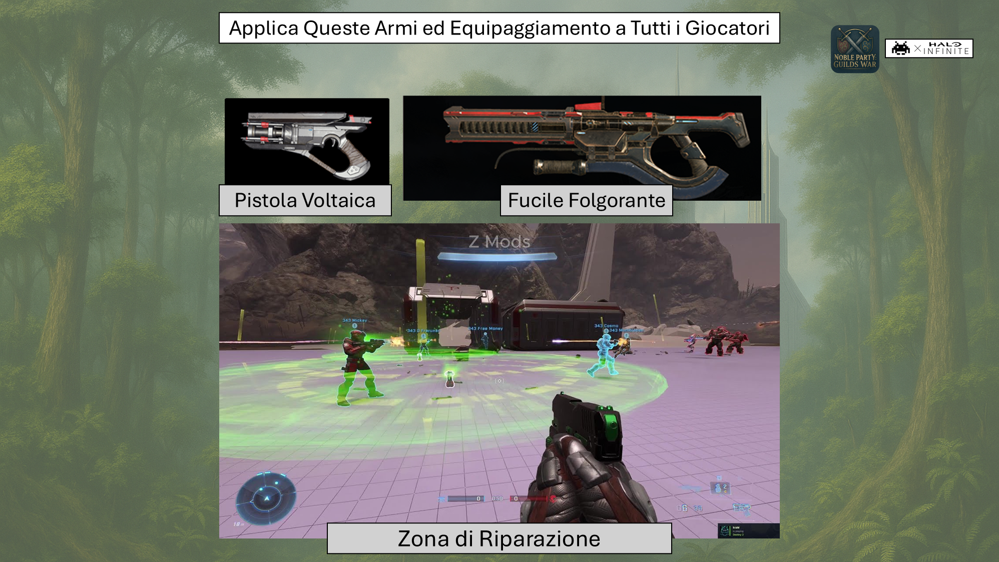
👉Non applicabile a: Social, Sketch, e Champions quando Fortnite (Battle Royale).
👉Altrimenti, lascia le armi di Default del Modes selezionato.
👉Arsenale applicabile secondo il Regolamento👉Not applicable to: Social, Sketch, and Champions when Fortnite (Battle Royale).
👉Otherwise, leave the selected Mode's Default weapons.
👉Arsenal applicable according to the Rules
Opzione: Nella & Franco (Sayans)Option: Nella & Franco (Sayans)
Decidi che ogni Gilda giochi con 2 Giocatori soltanto.
👉Non applicabile a Sketch.
👉Leggi Sayans sul RegolamentoDecide that each Guild plays with 2 Players only.
👉Not applicable to Sketch.
👉Read Sayans in the Rules
Le Guerre di CobraCobra's Wars
InformazioniInformation
Queste sono le Guerre (= 4 Partite) per ottenere punti.
Esse sono raggruppate in Capitoli di due Campagne.
Questa Gilda fa parte di una Armata quando ai lati del simbolo "VS" ci sono +1 Gilda.
In caso di Armata, il Leader principale di questa Gilda potrebbe non essere il Leader dell'Armata.
Se il Leader dell'Armata seglie un Tipo: TS, le Armate sono imposte ai lati del simbolo "VS".
La prima Campagna ufficiale con Capitoli ufficiali
[Guarda l'intera Campagna Ufficiale sul Home].
La seconda Campagna (Side Quest) creata dalla Gilda stessa.]. The second Campaign (Side Quest) created by the Guild itself. These are the Wars (= 4 Matches) played to earn points.
They are grouped into Chapters across two Campaigns.
This Guild is part of an Army when there is more than 1 Guild on either side of the "VS" symbol.
In the case of an Army, this Guild's main Leader might not be the Army's Leader.
If the Army's Leader picks a Type: TS, the Armies are set on either side of the "VS" symbol.
The first is the official Campaign with official Chapters
[See the whole Official Campaign on the Home].
The second Campaign (Side Quest) is created by the Guild itself.
Campagna Ufficiale: Inganno e PotereOfficial Campaign: Deception and Power
No. #1
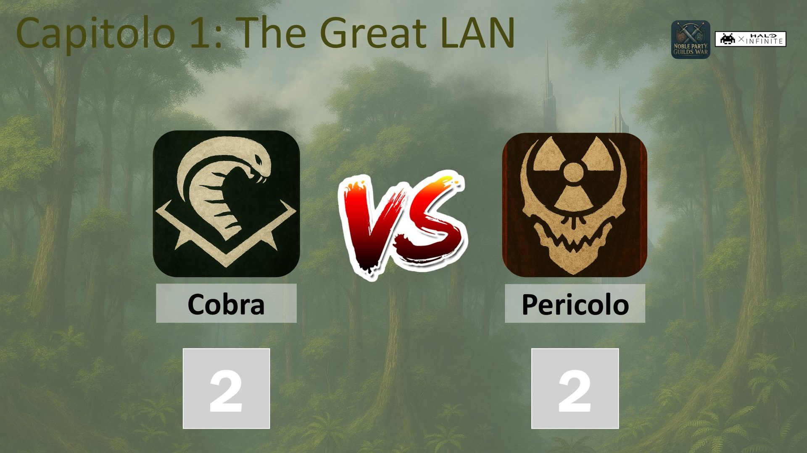
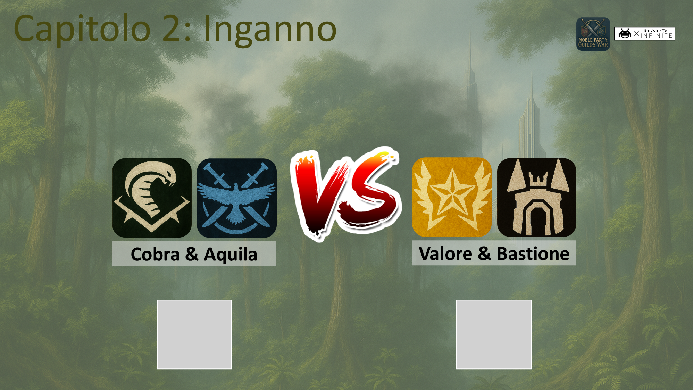
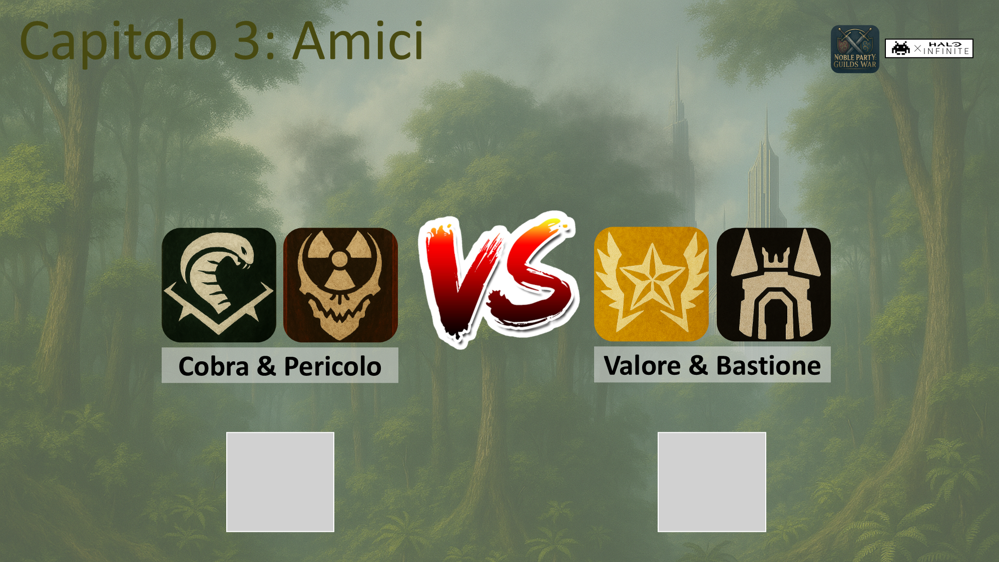
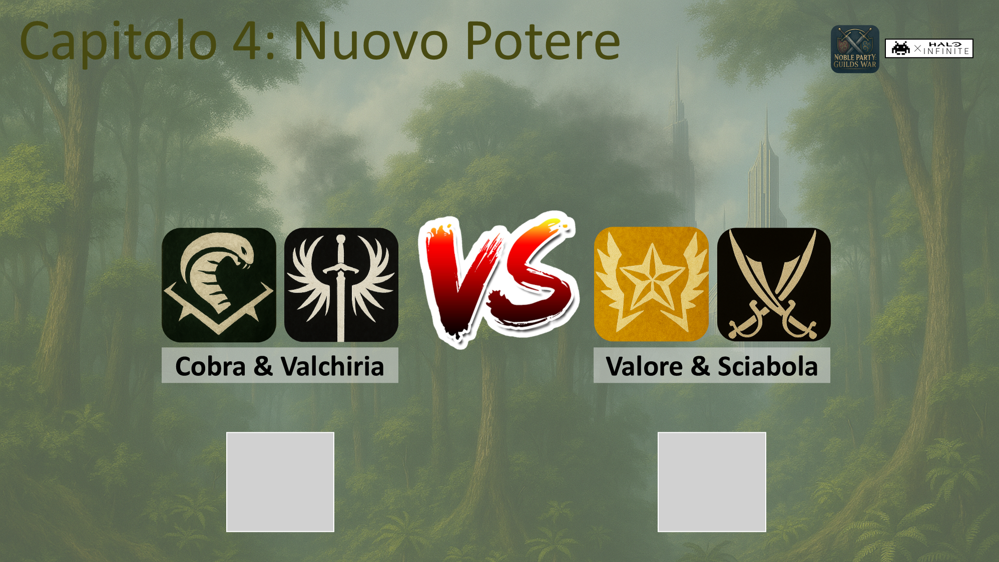
👉Conclusa una Guerra, il risultato viene esposto per tutte le Gilde che hanno partecipato alla Guerra.👉Once a War is concluded, the result is posted for every Guild that took part in the War.
Side Quest: TuonoSide Quest: Thunder
Personalizza il nome di ogni Capitolo e scegli chi affrontare per ottenere punti.
Sono Quattro Capitoli, in due Capitoli affronti una Gilda, in due Capitoli scegli una Armata ed affronti una altra Armata.Customize the name of each Chapter and choose who to face to earn points.
There are Four Chapters: in two Chapters you face a Guild, in two Chapters you pick an Army and face another Army.
No. #1
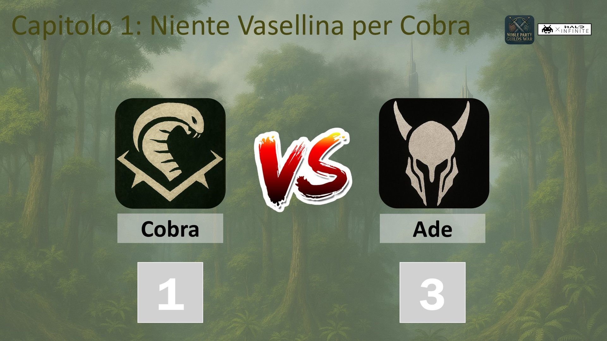
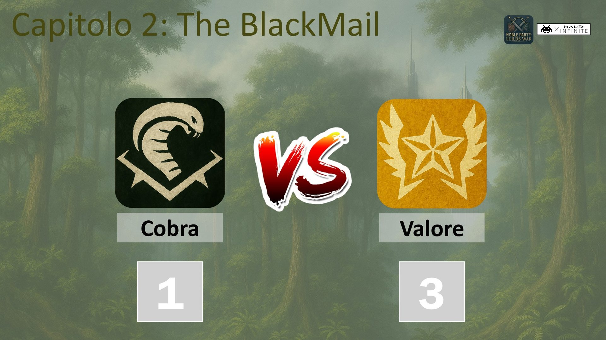
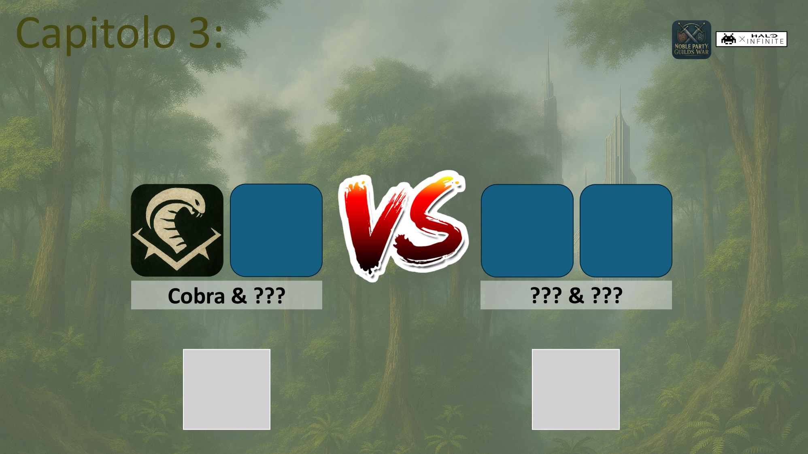
👉Conclusa una Guerra, il risultato viene esposto per tutte le Gilde che hanno partecipato alla Guerra.👉Once a War is concluded, the result is posted for every Guild that took part in the War.👉Lasciata la possibilita di aggiungere 1 Capitolo con scontro di 6 Gilde.
👉Ogni Guerra Personalizzata deve essere unica
(non puoi ripetere una Guerra con le stesse Gilde o Armate precedentemente conclusa in una Campagna Ufficiale o Side Quest).
👉Ad ogni Guerra aiuti a completare la tua Campagna Secondaria e quella di tutte le altre Gilde nella Guerra scelta.
👉I nomi dei Capitoli per questa Gilda possono essere diversi dai nomi dei Capitoli delle altre Gilde.👉The option is left open to add 1 Chapter with a 6-Guild clash.
👉Every Custom War must be unique
(you cannot repeat a War with the same Guilds or Armies already concluded in an Official Campaign or Side Quest).
👉With every War you help complete your own Secondary Campaign and that of every other Guild in the chosen War.
👉The Chapter names for this Guild may differ from the Chapter names of the other Guilds.
PersonaggiCharacters
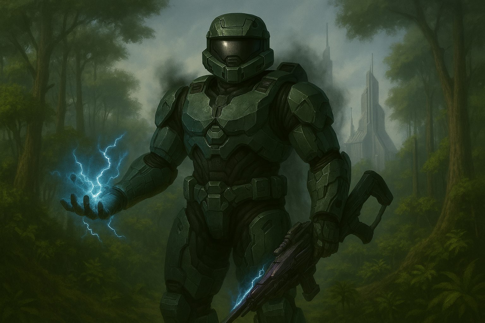
Seraphis
"Si narra che a Levania esistano infiniti labirinti e trappole. Fra le tante, capire quale volto indossa Seraphis"."They say Levania holds endless labyrinths and traps. Among them, working out which face Seraphis is wearing".[Scopri tutta la Storia][Discover the whole Story]
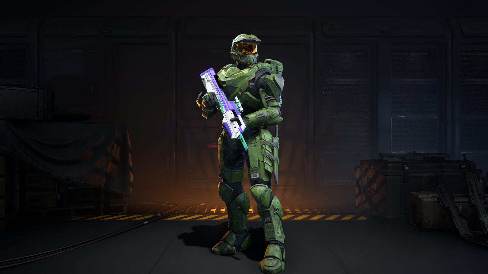
SlickColt
Leader Principale assegnato alla GildaMain Leader assigned to Guild Cobra. "La forza del sacrificio supera la gloria della vittoria""The strength of sacrifice outweighs the glory of victory".
Game On
Rules!
Prima di giocare ricordati di leggere ilBefore playing remember to read theRegolamentoRules.
Backlog
Ogni Gilda accede alla Backlog a piacere.Every Guild can access the Backlog at will.